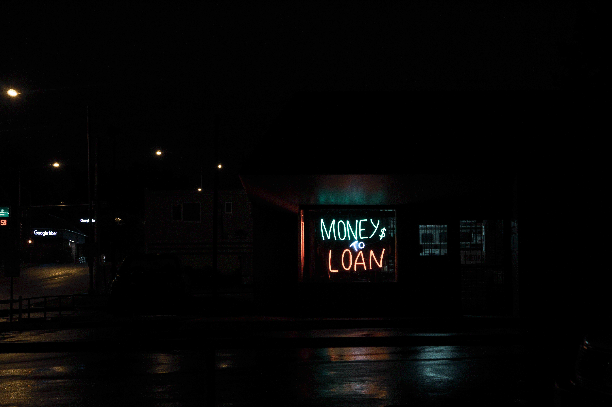

Loan
What Is A Loan?
A loan is where you borrow money from someone, usually from a bank, which you will return back later on. I know this sounds good, but beware that this money is not free. Because banks also need to earn money they will charge you something that is called an interest when you pay back the money you borrowed. This is a certain percentage of the money that you borrow, which will be paid on top of the full amount of money that you borrow.
The Two Forms of Interest
There are two forms of interest: variable (or floating) and fixed. Variable interest fluctuates (rises and falls) over time. This will mean that sometimes you may pay more interest and sometimes you may pay less. Fixed interest, as its name suggests, means that the interest rate is fixed, so you will pay the same percentage of interest back. This will be beneficial for borrowers as they will be able to predict their future payments and know how much they will need to pay.
